Unduh ekstensi dari Google Drive
Agen Pencatatan Non Tender versi 3.9.0, berupa satu file ZIP. Cukup dipasang sekali. Perbaikan kode berikutnya dikirim otomatis.
Siaran ulang: tutorial Agen Hataf
Lebih suka menonton? Agen Hataf memandu pemasangan dan pemakaian dari awal sampai selesai.
Langkah pemasangan di Chrome
Pemanasan sebelum laga. Cukup sekali per komputer.
-
Unduh file ZIP
Klik Unduh ZIP di atas. Unduhan langsung berjalan otomatis tanpa membuka Google Drive. File
AgenPencatatanNonTender-ekstensi-v3.9.0.ziptersimpan di folder Downloads.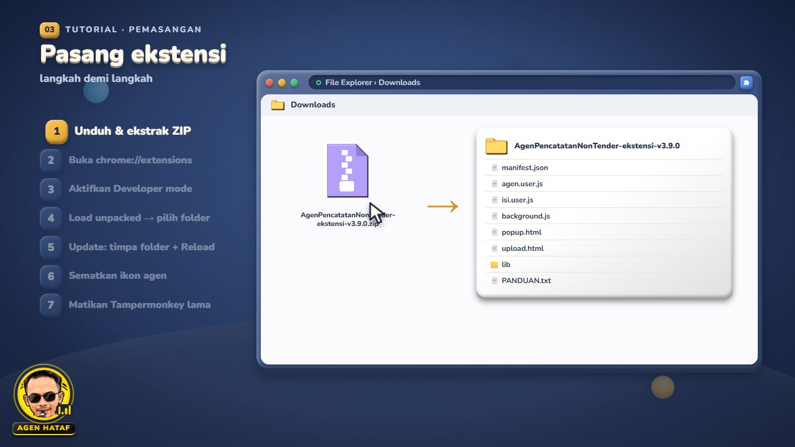
File ZIP di folder Downloads. -
Ekstrak ZIP ke folder tetap
Klik kanan file ZIP, pilih Extract All… lalu Extract. Hasilnya adalah sebuah folder.
Penting: taruh folder hasil ekstrak di tempat yang tidak akan dihapus atau dipindah, misalnya
Documents\AgenPencatatan. Ekstensi akan berhenti bekerja jika foldernya hilang.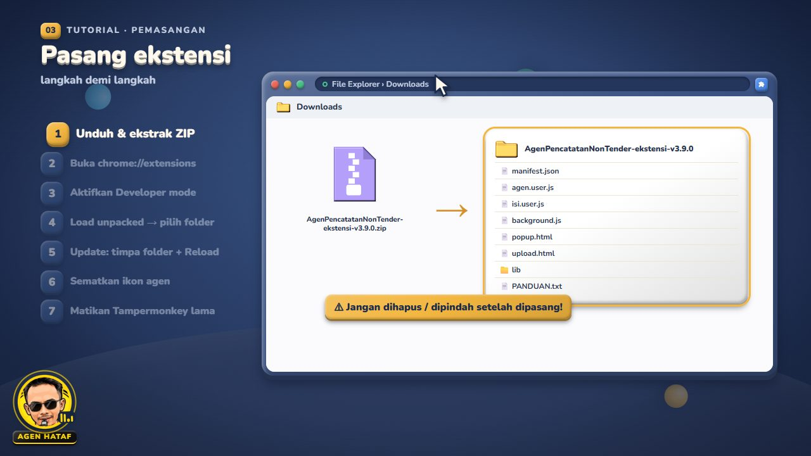
Folder hasil ekstrak. Jangan dihapus atau dipindah. -
Buka halaman ekstensi Chrome
Buka tab baru, salin alamat ini, tempel di kolom alamat, lalu tekan Enter.
chrome://extensionsAlamat ini tidak bisa diklik dari website, jadi harus disalin lalu ditempel sendiri.
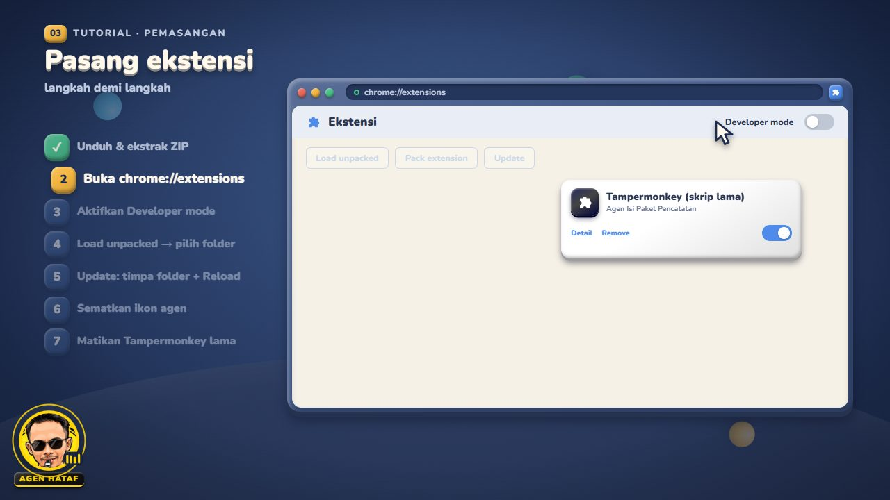
Halaman Extensions di Chrome. -
Aktifkan Developer mode
Nyalakan saklar Developer mode di pojok kanan atas.
Saklar Developer mode harus menyala. -
Klik Load unpacked, pilih folder hasil ekstrak
Klik Load unpacked, pilih folder dari langkah 2, lalu klik Select Folder. Pilih folder yang di dalamnya langsung ada file
manifest.json. Jika yang terlihat masih folder lagi, masuk satu tingkat lagi.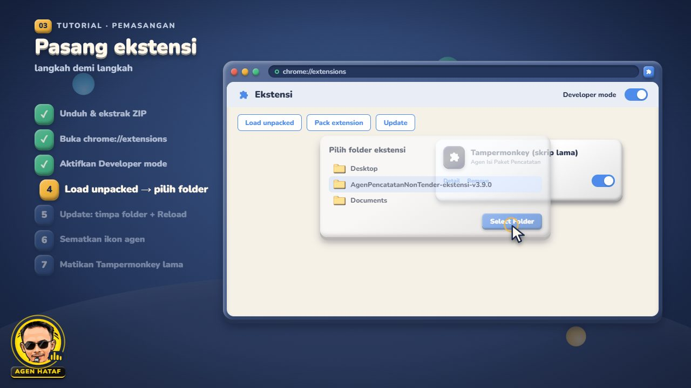
Load unpacked, lalu pilih folder yang berisi manifest.json. -
Ekstensi terpasang
Kartu Agen Pencatatan Non Tender versi 3.9.0 muncul di halaman ekstensi dengan saklar menyala.
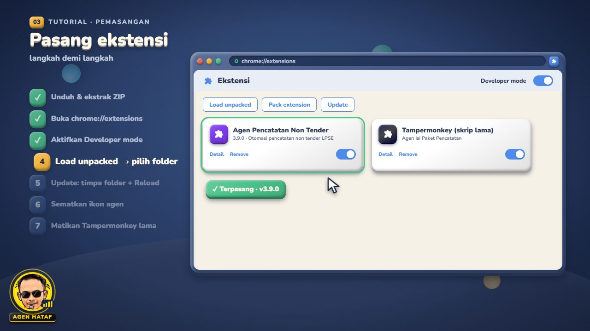
Terpasang: versi 3.9.0. -
Sudah punya versi lama? Timpa lalu Reload
Ekstrak ZIP baru menimpa folder yang sama, lalu klik ikon ↻ Reload pada kartu ekstensi.
Jangan klik Remove. Jika ekstensi dihapus, login PPTK dan pengaturan ikut hilang.
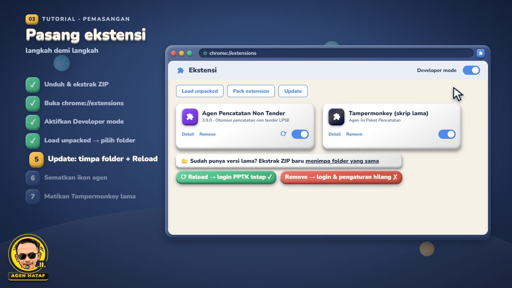
Reload aman. Remove menghapus login. -
Sematkan ikon agen ke toolbar
Klik ikon puzzle di sebelah kolom alamat, lalu klik ikon pin di samping Agen Pencatatan Non Tender agar tombolnya selalu terlihat.
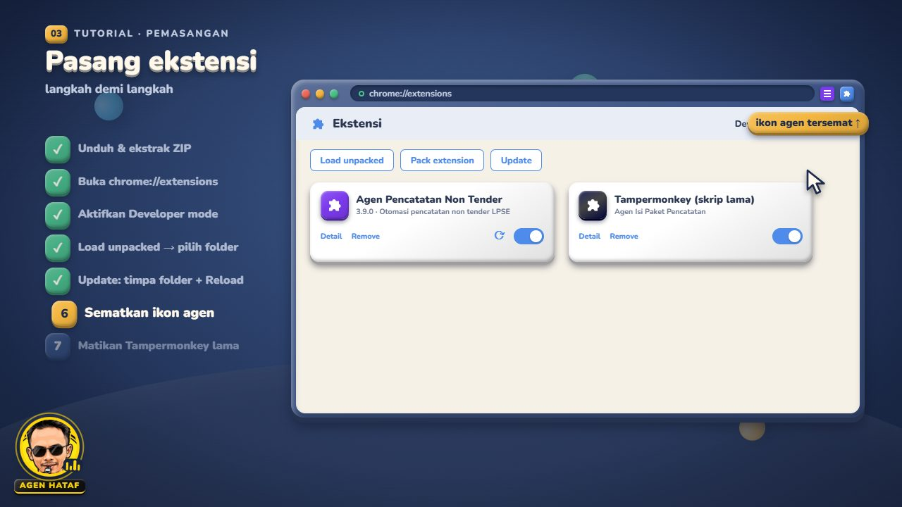
Ikon puzzle, lalu pin. -
Matikan skrip Tampermonkey versi lama
Jika sebelumnya memakai skrip agen lewat Tampermonkey, nonaktifkan skrip itu. Jika tidak, panel agen akan muncul dobel di LPSE.
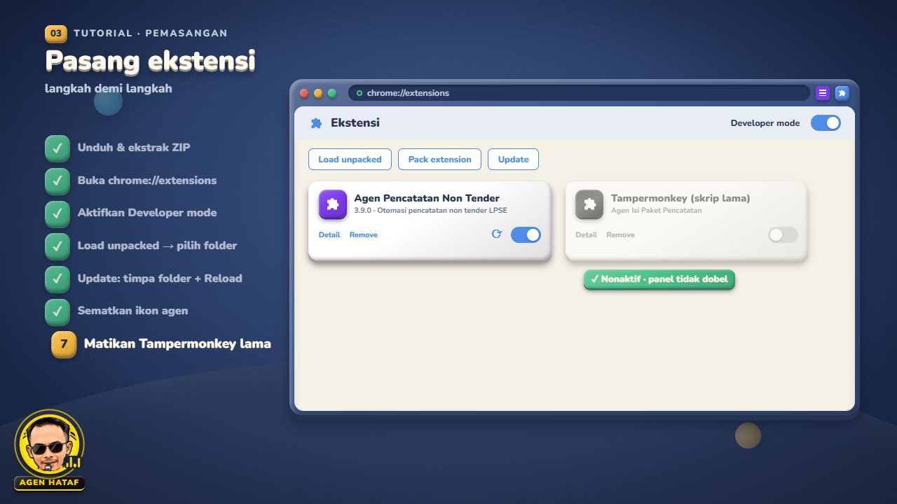
Tampermonkey mati, panel tidak dobel.
Login & jalankan agen
Urutan laganya: login, Upload RKA, Proses Semua RKA, Catat ke Sheet, lengkapi sheet, lalu Isi Realisasi.
-
Klik ikon agen, lalu login LPSE
Klik ikon agen di toolbar. Popup menampilkan urutan kerja dan pintasan halaman. Klik Buka LPSE dan login, lalu masuk dengan akun PPK atau Pejabat Pengadaan Anda.
Setelah login, panel Agen Hataf muncul di kanan bawah halaman LPSE dengan dua tab: ① Buat & Catat Paket dan ② Isi Realisasi.
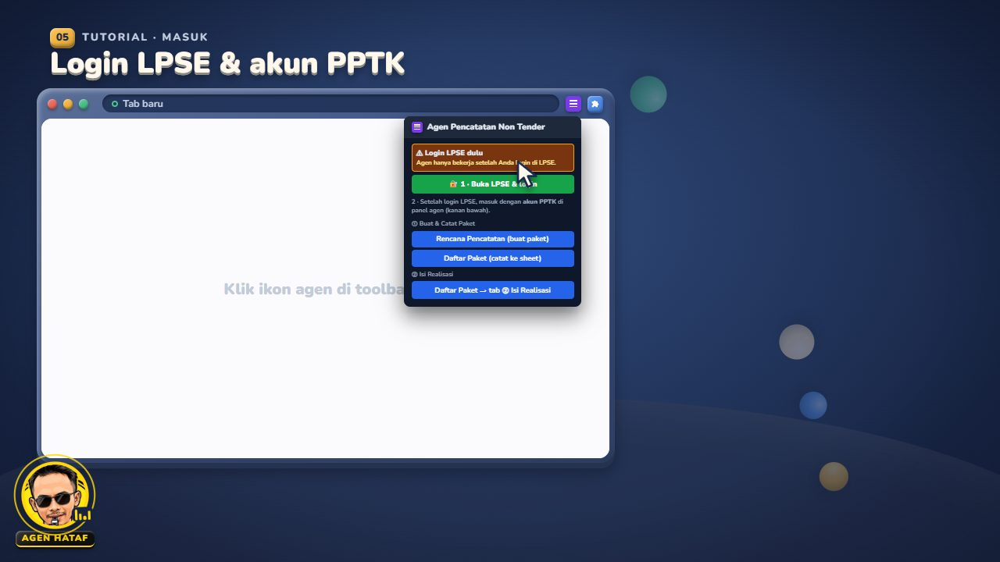
Popup agen berisi urutan kerja. -
Masuk dengan akun PPTK
Di panel, isi username dan password PPTK yang diberikan admin, lalu klik Masuk.
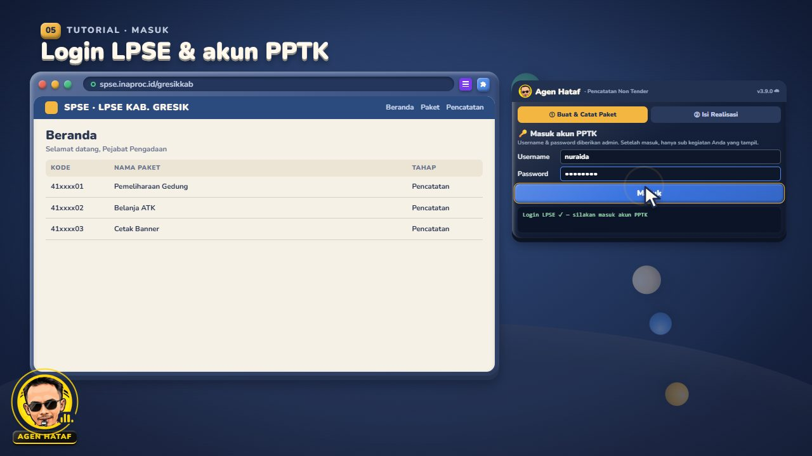
Login PPTK di panel agen. -
Pilih sub kegiatan
Hanya sub kegiatan milik Anda yang tampil. Tanda ✔ berarti RKA sudah diupload, sedangkan tanda ⚠ (kotak merah) berarti belum. Tahun anggaran terdeteksi otomatis dari RKA di sheet.
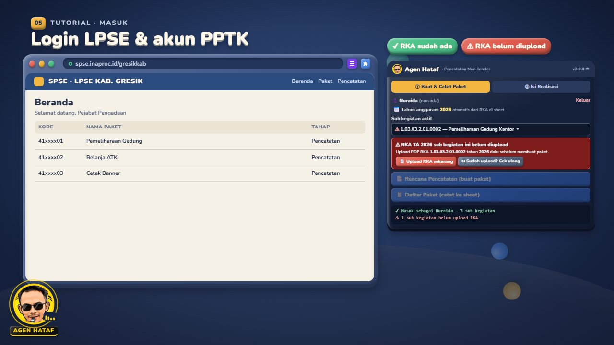
✔ RKA sudah ada, ⚠ RKA belum diupload. -
Upload RKA dalam 3 langkah
Klik Upload RKA sekarang. Halaman upload terbuka di tab baru, langsung di dalam ekstensi.
- Langkah 1: pilih PDF RKA dari SIPD (formulir RKA Belanja SKPD).
- Langkah 2: klik Baca dokumen. Sub kegiatan, kode rekening, uraian, dan nilai terbaca otomatis. Periksa tabel validasi: jumlah item per rekening dicocokkan dengan angka di dokumen.
- Langkah 3: klik Simpan ke sheet RKA.
Kembali ke tab LPSE. Status sub kegiatan berubah hijau.
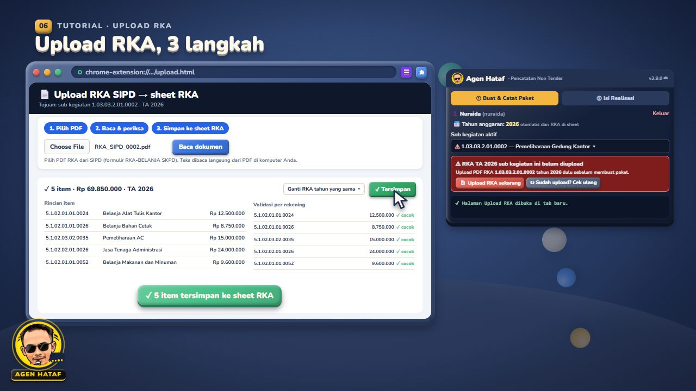
RKA terbaca dan tersimpan ke sheet RKA. -
Buat paket: Proses Semua RKA
Buka halaman Rencana Pencatatan, lalu klik Proses Semua RKA. Agen mengatur tahun anggaran dan filter, memindai setiap RUP, mencocokkannya dengan item RKA sub kegiatan Anda, lalu membuat paket yang cocok secara otomatis.
Tombol Cek nilai membantu menemukan pencatatan yang belum sesuai angka sesudah perubahan, untuk dihapus bila perlu.
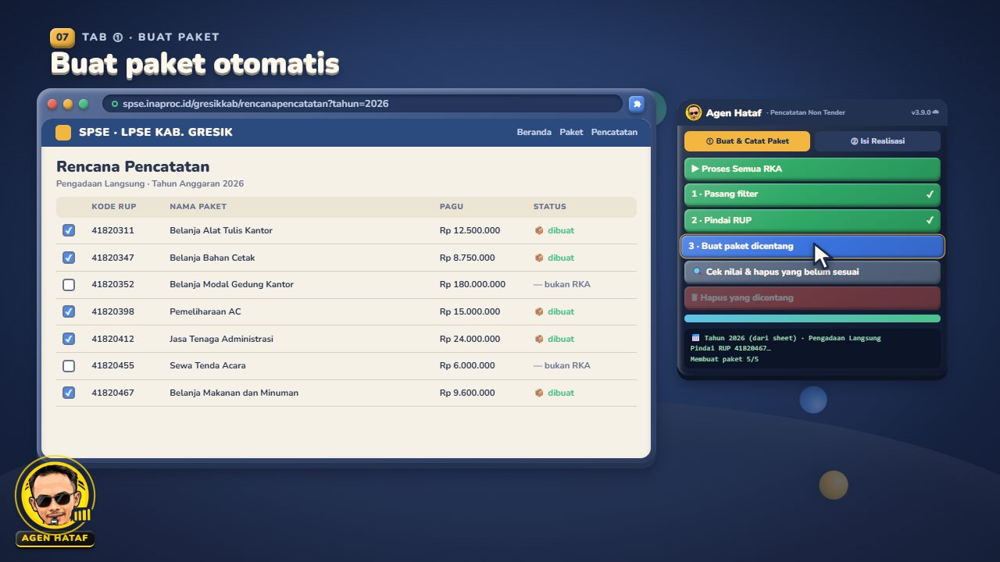
Paket yang cocok dicentang lalu dibuat otomatis. -
Catat ke Sheet
Buka halaman Daftar Paket, lalu klik Catat ke Sheet. Kode RUP, nama paket, jenis, metode, nilai, kode paket, dan status LPSE ditulis ke sheet DAFTAR PAKET.
Hanya paket yang cocok dengan RKA dan sudah memakai angka sesudah yang dicatat.
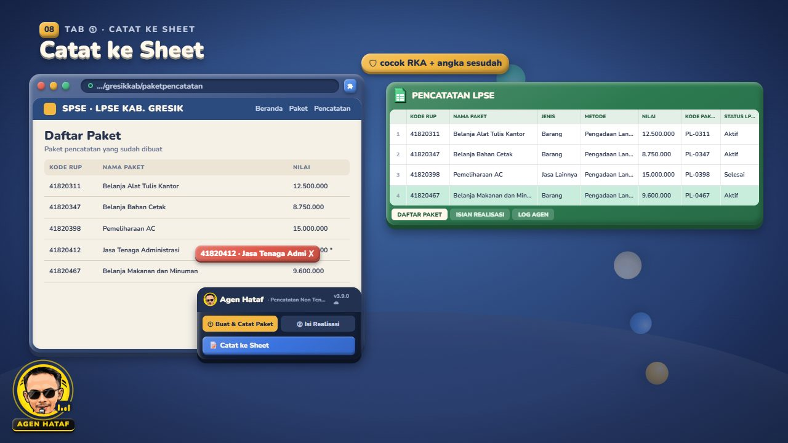
Daftar Paket tercatat ke sheet. -
Lengkapi sheet ISIAN REALISASI
Buka spreadsheet sub kegiatan. Untuk setiap paket, pilih SIKaP atau Non SIKaP. Kolom yang tidak berlaku otomatis terkunci dan berwarna abu-abu. Provinsi dan kabupaten/kota dipilih dari dropdown bertingkat.
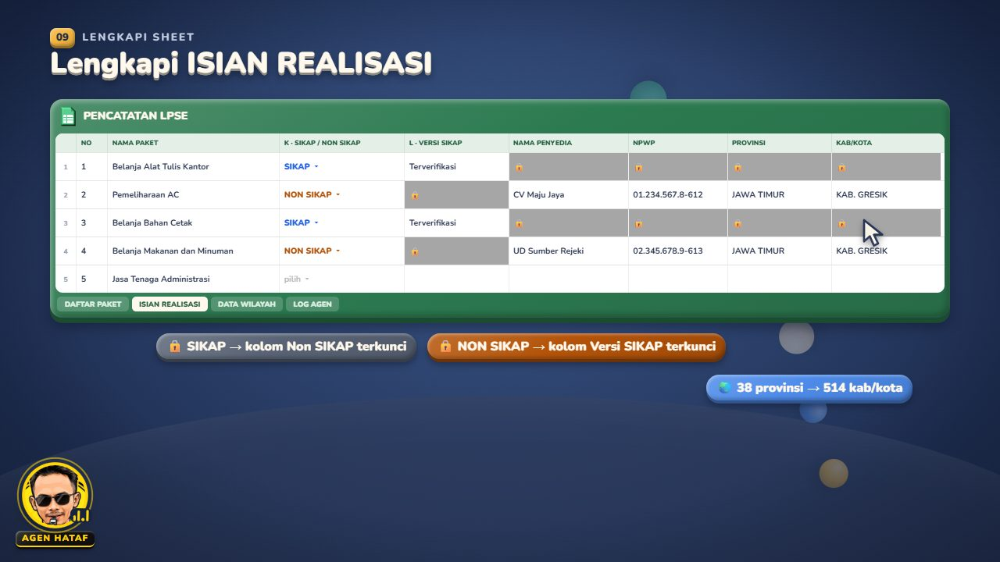
Kolom yang tidak berlaku terkunci abu-abu. -
Upload bukti ke Google Drive
Lewat menu Upload Bukti di spreadsheet, file bukti tersimpan rapi di Google Drive, satu folder untuk setiap paket.
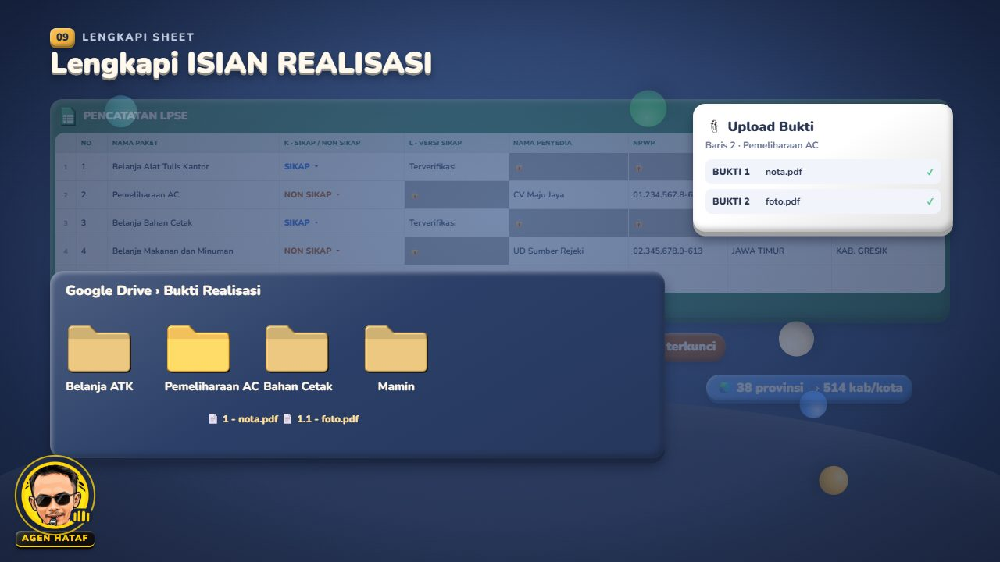
Satu folder bukti untuk setiap paket. -
Tab ②: Muat data, lalu Uji dulu
Di panel, buka tab ② Isi Realisasi. Klik Muat Data Sheet dan, bila perlu, Cocokkan Kode Paket.
Jalankan Uji terlebih dahulu. Agen mengisi formulir tanpa menekan simpan akhir, jadi hasilnya bisa Anda periksa.
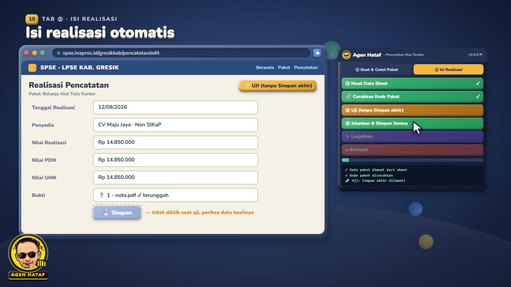
Mode Uji: formulir terisi, belum disimpan. -
Jalankan & Simpan Semua
Sudah benar? Klik Jalankan & Simpan Semua. Agen mengisi realisasi, penyedia, nilai PDN dan UMK, serta mengunggah bukti, paket demi paket.
Ada yang gagal? Alasannya tertulis di sheet. Perbaiki, lalu klik Lanjutkan.
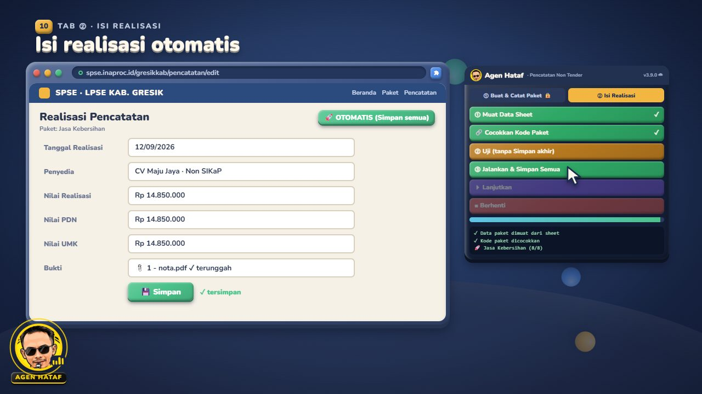
Realisasi tersimpan otomatis.
Pasang sekali, update otomatis
Mulai versi 3.9.0, ekstensi tidak perlu dipasang ulang setiap ada perbaikan.
Kode agen tersimpan di Google Drive dan dikirim lewat Apps Script loader. Ekstensi mengeceknya otomatis paling lama lima menit sekali, dan hanya mengunduh bila kodenya berubah. Kode baru langsung dipakai saat halaman LPSE dimuat ulang.
- Judul panel bertanda ☁ berarti kode dari Drive, sedangkan 📦 berarti versi bawaan ZIP.
- Internet atau Drive bermasalah? Agen tetap jalan dengan salinan terakhir.
- Mau cek sekarang? Klik ikon agen, lalu Cek update kode sekarang.
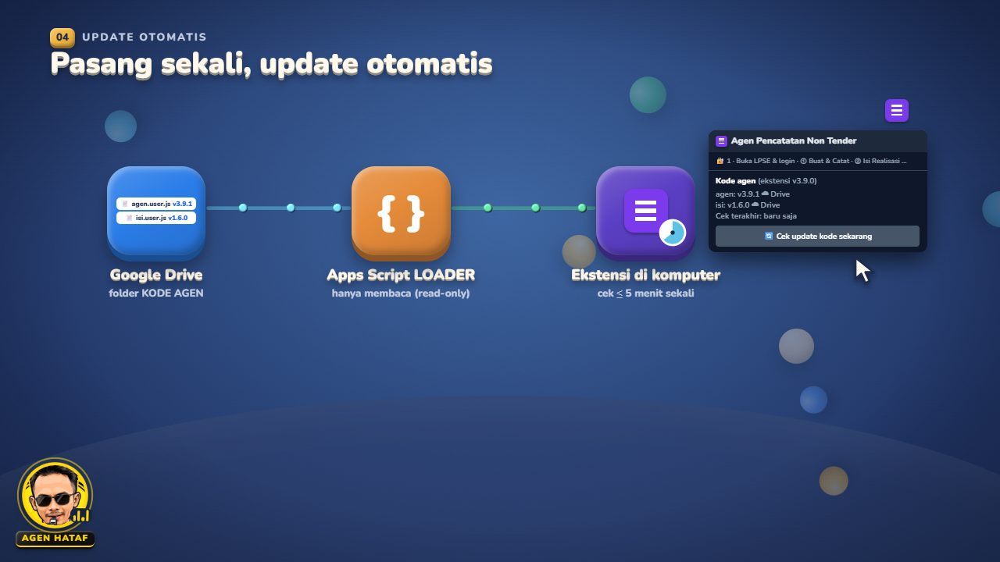
Aturan pertandingan
Wasit yang baik tahu aturannya. Baca ini sebelum menjalankan agen.
- Jangan biarkan komputer sleep atau terkunci selama agen bekerja.
- Hanya satu agen yang boleh berjalan. Selama tab ① bekerja, tab ② dikunci, begitu pula sebaliknya.
- Jendela Chrome boleh di-minimize. Agen tetap bekerja, dan setiap RUP dicoba ulang hingga dua kali.
- Link Web App terkunci di dalam ekstensi, jadi data hanya dikirim ke alamat resmi.
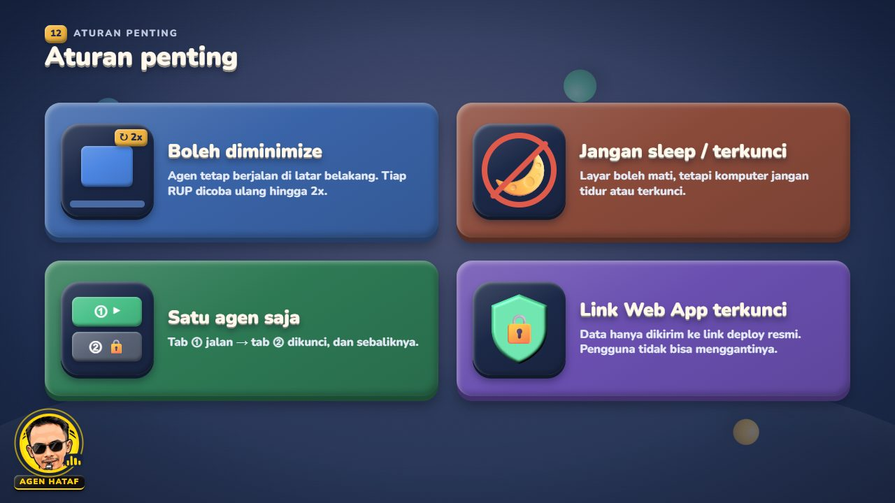
Kondisi khusus
- Paket sudah selesai di LPSE otomatis dilewati, dan ditandai SELESAI di sheet.
- Paket dibatalkan? Barisnya ditandai PAKET BATAL. Jalankan Proses Semua RKA lagi: paket baru dibuatkan dan barisnya diperbarui.
- Paket tetap diproses selama minimal satu baris realisasinya siap. Simpan akhir menunggu tanggal paket selesai diisi.
- Halaman Upload RKA tidak bisa dibuka? Klik Buka di jendela Samaran.
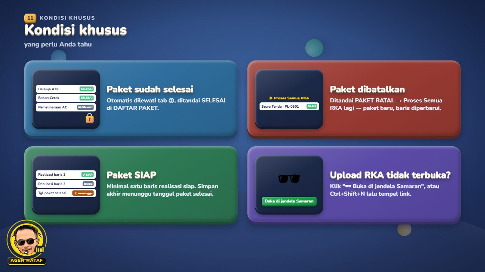
Jika ada masalah
Klik pertanyaan untuk membuka jawabannya.
Panel agen tidak muncul di LPSE
- Pastikan sudah login di
spse.inaproc.iddengan akun PPK atau Pejabat Pengadaan. - Muat ulang tab LPSE dengan F5.
- Cek di
chrome://extensionsbahwa saklar Agen Pencatatan Non Tender menyala.
Panel agen muncul dobel
Skrip Tampermonkey versi lama masih aktif. Matikan skrip itu (langkah pemasangan nomor 9), lalu muat ulang halaman LPSE.
Ekstensi tiba-tiba hilang atau error setelah folder dipindah
Ekstensi dibaca langsung dari folder hasil ekstrak. Kembalikan folder ke tempat semula, atau ulangi Load unpacked dari lokasi baru. Lain kali, simpan di folder tetap.
Ada paket yang gagal diisi
Alasannya tertulis di sheet, dan setiap langkah tercatat di LOG AGEN. Perbaiki datanya di sheet, lalu klik Lanjutkan di tab ②.
Cara memperbarui ke versi baru
Perbaikan kode agen datang otomatis dari Drive (lihat Update otomatis). Jika ada versi ZIP baru, unduh dari Drive, ekstrak menimpa folder yang sama, lalu klik ↻ Reload pada kartu ekstensi. Jangan klik Remove.
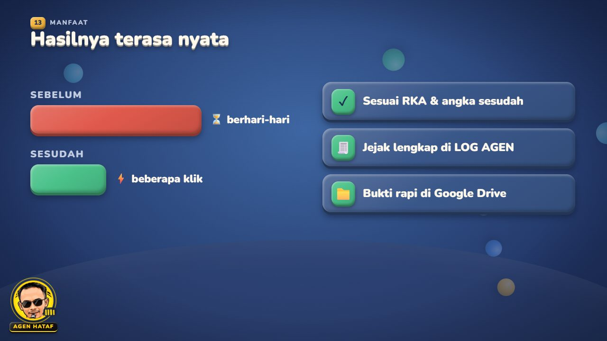